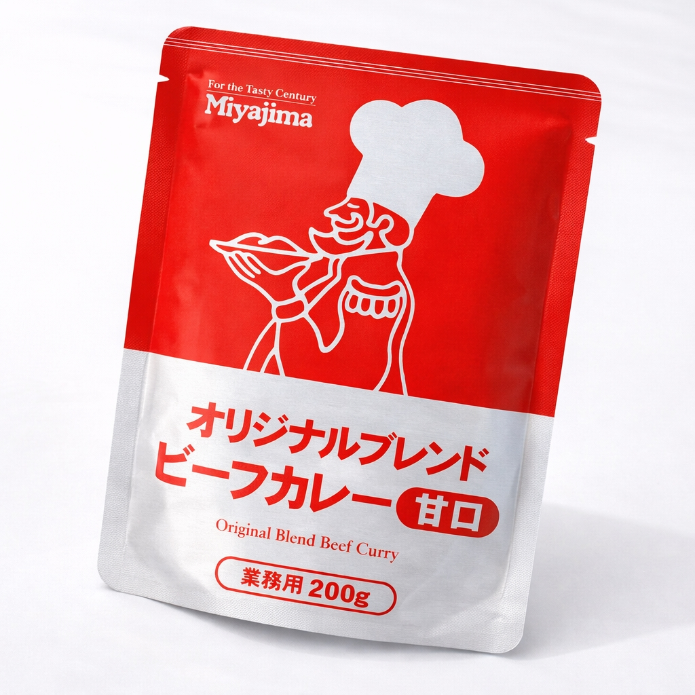
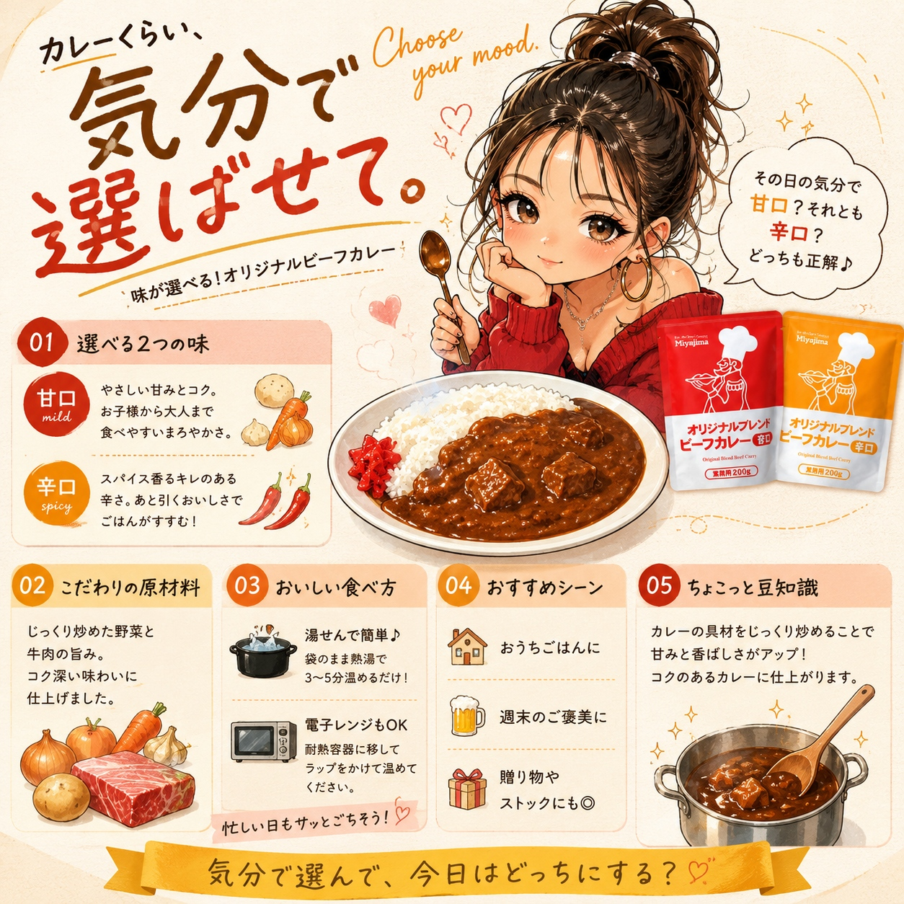

SCENE 01
I024

i 惣菜・加工品
オリジナルビーフカレー
【野菜の旨味と牛肉のコク。選べる辛さで、いつでも専門店の味。】
- 内容量200ｇ/ｐ
- 保存常温
- 産地日本
商品の特徴を読む
いつもの食卓が、まるで洋食店のような特別な空間に変わる、そんなビーフカレーをお届けします。じっくりと炒めた玉ねぎの甘み、りんごやチャツネのフルーティーな酸味、そしてビーフの深いコク。様々な食材が織りなす旨味の層が、口いっぱいに広がります。大きめにカットされたじゃがいもや人参、そして柔らかく煮込まれた牛肉がゴロゴロと入っており、食べ応えも十分です。ご家族みんなで楽しめる『甘口』と、スパイスのキレが食欲をそそる『辛口』の2種類から、お好みの組み合わせをお選びいただけます。温めるだけですぐに本格的な一皿が完成するので、忙しい日の夕食や、ちょっと贅沢したい休日のランチにもぴったり。この一皿が、あなたの大切な食事の時間を、より豊かで幸せなものに彩りますように。自慢のオリジナルビーフカレーを、ぜひご賞味ください。
公式サイトへ移動します。価格・在庫・配送条件は移動先で最終確認してください。

SCENE 02
【野菜の旨味と牛肉のコク。選べる辛さで、いつでも専門店の味。】
SCENE 03
【野菜の旨味と牛肉のコク。選べる辛さで、いつでも専門店の味。】
PRODUCT INFORMATION
購入前に確認したい商品情報
- 商品名
- オリジナルビーフカレー
- 商品規格
- 200ｇ/ｐ
- 保存方法
- 常温
- 原産国
- 日本
- 製造地
- 日本
- 賞味期限
- 発送日より3ヶ月
原材料
甘口：野菜（じゃがいも、人参、生姜）、小麦粉（国内製造）、牛肉、異性化液糖、ラード、中濃ソース、チャツネ、カレー粉、ビーフエキス、ソテーオニオン、りんごピューレ、トマトペースト、食塩、チキンブイヨンパウダー、ショートニング、蛋白加水分解物、おろしにんにく加工品、砂糖、香辛料／調味料（アミノ酸等）、着色料（カラメル）、香辛料抽出物、（一部に小麦・牛肉・大豆・鶏肉・豚肉・りんごを含む） 辛口：野菜（じゃがいも、人参、生姜）、小麦粉（国内製造）、牛肉、ラード、異性化液糖、中濃ソース、カレー粉、ビーフエキス、ソテーオニオン、チャツネ、りんごピューレ、トマトペースト、食塩、チキンブイヨンパウダー、ショートニング、蛋白加水分解物、おろしにんにく加工品、砂糖、香辛料／着色料（カラメル）、調味料（アミノ酸等）、香辛料抽出物、（一部に小麦・牛肉・大豆・鶏肉・豚肉・りんごを含む）
FAQ
購入前のよくあるご質問
辛さのレベルはどのくらいですか？
甘口はお子様でも安心してお召し上がりいただける、果物の甘みが引き立つまろやかな味わいです。辛口は市販カレーの中辛から辛口程度で、程よいスパイスの刺激と香りが食欲をそそります。
アレルギー情報を教えてください。
原材料の一部に小麦・牛肉・大豆・鶏肉・豚肉・りんごを含みます。詳しくは商品パッケージの原材料表示をご確認ください。
MEAT PLUS OFFICIAL SHOP
【野菜の旨味と牛肉のコク。選べる辛さで、いつでも専門店の味。】
仕入れ・加工・梱包・発送まで自社で行うMEAT PLUSの公式オンラインショップでご注文いただけます。
公式オンラインショップで購入する